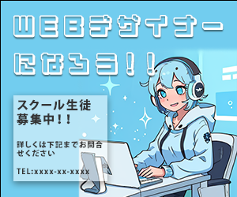
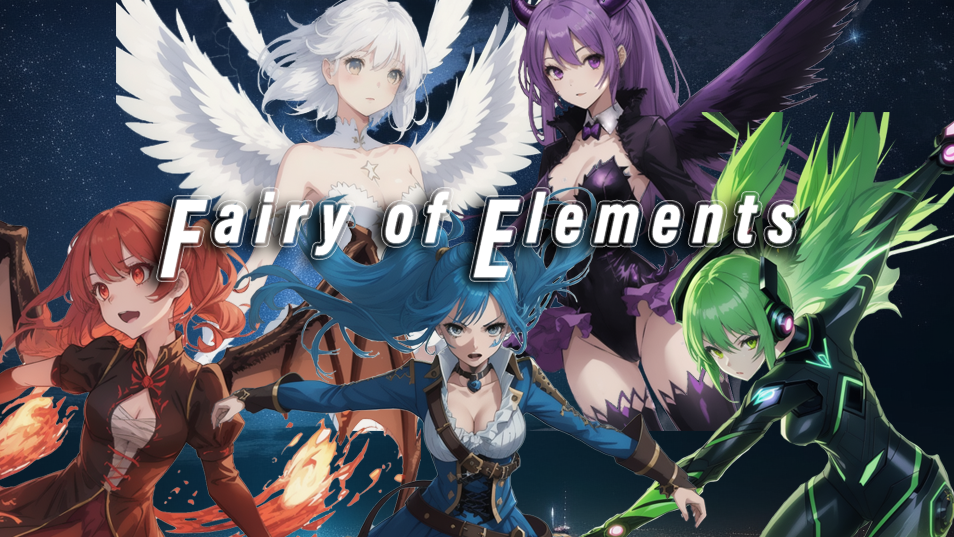

Cafe Crema Menu 制作経緯・ポイント 舟入幸町にあるカフェCrema様よりご依頼いただき作成しました。左側のメニューは店内にある木の一枚板のカウンターテーブルをイメージし、全体的にポップに仕上げました。右側のメニューは夏季限定メニューとして配色と透過した氷で涼しげな印象になるように仕上げました。 製作期間 約2週間 使用ソフト Illustrator : 全体のレイアウト、ロゴ作成に使用。Photoshop : 写真加工に使用
AI Banner1  制作経緯・ポイント 架空のパソコンスクールの生徒募集バナーをイメージし作成しました。イラストは全てStable Diffusionにてプロンプトから生成したイラストを使用しています。リアルな画風ではなく2Dイラストを意識したモデルを使用しています。 製作期間 約2時間 使用ソフト Stable Diffusion : イラスト生成に使用Illustrator : 全体のレイアウトに使用。
AI Banner2 制作経緯・ポイント 架空転職サイトのバナーをイメージし作成しました。イラストと背景は全てStable Diffusionにてプロンプトから生成したイラストを使用しています。女性が高層ビルの並ぶ街に立ち向かい、力強く前向きに働くことをテーマにしました。 製作期間 約2時間 使用ソフト Stable Diffusion : イラスト生成に使用Photoshop : 全体のレイアウトに使用。
AI Banner3  制作経緯・ポイント 架空ゲームのバナーをイメージし作成しました。イラストと背景は全てStable Diffusionにてプロンプトから生成したイラストを使用しています。色々な属性を持つ妖精をテーマに、現代のアニメ風な描画タッチのモデルを使用しイラストを生成しています。 製作期間 約5時間 使用ソフト Stable Diffusion : イラスト生成に使用Photoshop : 全体のレイアウト、イラスト加工に使用。